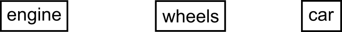
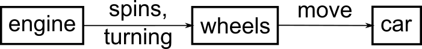
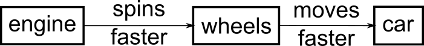
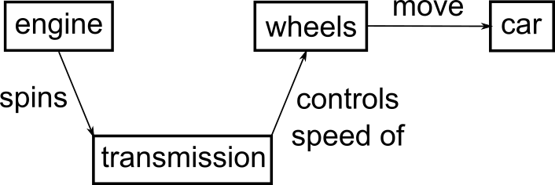

Building skill with practice
Lesson objectives
- Compare and contrast the three stages of skill acquisition (novice, intermediate, expert)
- Apply a concept map to explore a simple mental model
- Understand the limitations of knowledge in the absence of a functional mental model
- Create a formative assessment to diagnose a broken mental model
- Apply strategies to meet students where they are
Overview
We will now get started with a discussion of how learning works. We will begin with some key concepts from educational research and identify how these principles can be put into practice for data science and data literacy in the classroom.
Pedagogical model
For our purposes, we are going to focus on showing students how to solve specific problems with specific tools and providing hands-on practice. This serves to develop students’ confidence and lay the foundation for future learning.
A critical component of this process is that students are able to practice what they are learning in real time, get feedback on what they are doing, and then apply those lessons learned to the next step in the learning process. Having students help each other also helps to reinforce the germane concepts.
Ideally we make these experiences interactive events for students and instructors. We give and receive feedback throughout the course of an instructional session. We incorporate assessments within the lesson materials and ask for feedback as part of the class session.
For many of your students, this may be their very first exposure to the skill or tool that you are teaching. Because of this, the material you present is not simply a source of information; it is the starting point for the development of a new skill. With this in mind, we will explore what research tells us about skills acquisition and development of a “mental model.”
Skills acquisition
When we think about developing skills, we can use a model where students advance through three different stages: novice, intermediate, and expert. This model is a simplification of the Dreyfus model of skill acquisition.
- Novice: someone who does not know what they do not know, i.e., they do not yet know what the key ideas in the domain are or how they relate. Novices may have difficulty formulating questions, or may ask questions that seem irrelevant or off-topic as they rely on prior knowledge, without knowing what is or is not related yet.
- Example: A novice might never have heard the R programming language, and therefore may have no understanding of how it can be used to perform analyses and automate tasks.
- Intermediate (AKA a competent practitioner): someone who has enough understanding for everyday purposes. They will not know all the details of how something works and their understanding may not be entirely accurate, but it is sufficient for completing normal tasks with normal effort under normal circumstances.
- Example: An intermediate might have used the R programming language before and understand how to modify existing code and write short scripts.
- Expert: someone who can easily handle situations that are out of the ordinary.
- Example: An expert may have experience writing their own functions in R and using them in complex workflows. When presented with a problem, immediately sees how these skills can be used to solve the problem.
Exercise
In the collaborative document, add the name of someone you think of as an expert. They don’t have to be in your field, just someone who has acquired enough skill to qualify as an expert as we just defined. After their name, explain why they are an expert.
Note that how a person feels about their skill level is not included in these definitions! You may or may not consider yourself an expert in a particular subject, but may nonetheless function at that level in certain contexts. For now, we are primarily concerned with novices, as this is often the level students are encountering data science applications.
It is common to think of a novice as a sort of an “empty vessel” into which knowledge can be “poured.” Unfortunately, this analogy includes inaccuracies that can generate dangerous misconceptions. In our next section, we will briefly explore the nature of “knowledge” through a concept that helps us differentiate between novices and intermediates in a more useful and visual way. This, in turn, will have implications for how we teach.
Mental models
Understanding is never a mirror of reality, even for an expert; rather, it is an internal representation based on our experience with a subject. This internal representation is often described as a mental model. A mental model allows us to extrapolate, or make predictions beyond and between the narrow limits of experience and memory, filling in gaps to the point that things “make sense.”
As we learn, our mental model evolves to become more complex and, most importantly, more useful. A useful model makes reasonable predictions and fits well within the range of things we are likely to encounter. While there will always be inaccuracies – or “misconceptions” – these do not interfere with day-to-day functioning. A useful model does not seize up or break down entirely as new concepts are added.
A mental model may be represented as a collection of concepts and facts, connected by relationships. The mental model of an expert in any given subject will be far larger and more complex than that of a novice, including both more concepts and more detailed and numerous relationships.
A more general tool that is useful for exploring any network of concepts and relationships is a concept map. A concept map asks you to identify which concepts are most relevant to a topic at hand and – critically – to identify how they are connected. It can be quite difficult to identify and organize these connections! However, the process of forcing abstract knowledge into a visual format can force you to name connections that you might otherwise have quietly assumed, or illuminate gaps that you may not have been aware of.
Here is a fairly simple concept map that illustrates the relationships between a car, it’s engine, and the wheels. We start a concept map by just adding the concepts, or the parts of the model. In this case, we have three boxes, labeled “engine”, “car”, and “wheels”:

The next part of a concept map would be to draw lines or edges to indicate the relationships among the different components. Here we add a line connecting the engine and the wheels, and the wheels and the car. In the figure we add that the engine spins, turning the wheels, and that the wheels move and propel the car.

This is a fairly simplified concept map, but it shows how a mental model of how a car works can be represented graphically.
Some additional examples of concept maps are:
forloops in Python https://raw.githubusercontent.com/carpentries/instructor-training/gh-pages/fig/for-loop-rec.png- Simplified carbon cycle https://raw.githubusercontent.com/carpentries/instructor-training/390de72105bad961a0c1beac09be2cc933a84f88/fig/Tree3.svg
{kind=link}
{kind=link}
Concept maps are not mental models
It is easy to confuse these two terms. We cannot “see” a person’s mental model, this term is an abstract description of how someone understands some part of the world. We can use concept maps as a visual representation of a mental model, but there are plenty of nuances of understanding that may be missed in a concept map. To misquote George Box, “All concept maps are wrong, but some are useful.”
Exercise
Draw a concept map for a mental model of something you teach. Start by identifying the “things” or parts of the model - these are the boxes (or circles if you prefer that shape). Next draw relationships as lines connecting the shapes. Use arrows if there is directionality to the relationship. You can do this on paper or with your computer; an online tool for this can be found at https://excalidraw.com/.
Misconceptions
Consider a modification of our concept map about the car from above. In this map, a student links the speed at which the engine turns directly to the speed of the car.

So it turns out this is not necessarily how things work. In fact, a direct coupling of the engine to the wheels would most likely cause a car to violently shake itself apart in a matter of seconds.
When mental models break, learning can occur more slowly than you might expect. The longer a prior model was in use, and the more extensively it has to be unlearned, the more it can actively interfere with the incorporation of new knowledge. Our students may quickly adapt to this new information if they had never thought much about how engine speed relates to car speed before and were simply trying out an existing mental model on a new situation. However, if they had extensive experience with the broken model above, it may take longer to unlearn what they thought they understood about how car speed is regulated.
An updated version of this model would include the transmission, which allows the engine speed to stay relatively constant even when traveling at different speeds.

Most mental models worth mapping are not so simple. Yet, forcing complex ideas in to this simplified format can be useful when preparing to teach, because it forces you to be explicit about exactly what concepts are at the heart of your topic, and to name relationships between them.
Exercise
Count the number of things in your concept map (lines and items) and add that number to the collaborative document.
Formative assessments
In order to effectively root out pre-existing misconceptions that need to be un-learned and stop quietly developing misconceptions in their tracks, we need to be actively and persistently looking for them. But how?
Like so many challenges we will discuss in this training, the answer is feedback. In this case, we want feedback that allows us to assess the developing mental model of a student in highly specific ways, to verify that learning is proceeding according to plan and not careening off in some unpredicted direction. We want to get this feedback while we teach so that we can respond to that information and adapt our instruction to get students back on track.
This kind of assessment has a name: it is called formative assessment because it is applied during learning to form the practice of teaching and the experience of the student. This is different from exams, for example, which sum up what a participant has learned but are not used to guide further progress and are hence called summative.
Feedback from formative assessment illuminates misconceptions for both instructors and students. It also provides reassurance on both sides when learning is proceeding on track. It is far more reliable than reading faces or using feelings of comfort as a metric, which tends to be what instructors and students default to otherwise.
Formative assessments can serve many purposes other than hunting down misconceptions, such as verifying engagement or supporting memory consolidation. We will discuss some of these functions in later on. In this section, we are interested quite narrowly in evaluating mental models.
One example of formative assessment that can be used to tease out misconceptions is the multiple choice question (MCQ). When designed carefully, these can target anticipated misconceptions with surgical precision. For example, suppose we are teaching children multi-digit addition. A well-designed MCQ would be:
Q: what is 27 + 15 ?
a) 42
b) 32
c) 312
d) 33
The correct answer is (a) 42, but the other answers provide information.
Exercise
Choose one wrong answer and write in the collaborative document what misconception is associated with that wrong answer.
Solution
- If the student answers 32, they forgot to carry the 1 to the tens place.
- If they answer 312, they know that they cannot just discard the carried 1, but do not understand that it is actually a ten and needs to be added into the next column. In other words, they are treating each column of numbers as unconnected to its neighbors.
- If they answer 33 then they know they have to carry the 1, but are carrying it back into the same column it came from.
Each of these incorrect answers has diagnostic power Each answer looks like it could be right. Silly answers like “a fish!” may offer therapeutic comedy but do not provide insight; nor do answers that are wrong in random ways. “Diagnostic power” means that each of the wrong choices helps the instructor figure out precisely what misconceptions students have adopted when they select that choice.
Exercise
Consider your concept map and write a multiple choice question to identify points where the mental model represented might be broken.
As an example, consider the final concept map we had for the car, above. To assess students’ mental models, we could ask students to complete the following statement:
When the wheels of the car spin faster…
- …the car will accelerate (correct)
- …the engine speed must have increased (incorrect, does not recognize the role the transmission plays in regulating the relationship between engine speed and wheel rotation)
- …the transmission must be in a lower gear (incorrect, understanding of gearing is opposite of how the transmission actually works: faster spinning wheels usually means a higher gear)
- …the engine is slowing down (incorrect, a decreasing engine speed would generally result in decreased wheel spin)
You can find more information on designing effective multiple choice questions at:
Going slow
It takes work to actively assess mental models throughout a class; this also takes time. This can make instructors feel conflicted about using formative assessment routinely because it may seem like wasted time or busywork.
If our goal is to help novices students construct an accurate and useful mental model of a new intellectual domain, this will impact our teaching. For example, we principally want to help students form the right categories and make connections among concepts. We do not want to overload them with a slew of unrelated facts, as this will be confusing.
An important practical implication of this latter point is the pace of teaching. Learning consists of more than “just” adding information to mental models; creating linkages between concepts and facts is at least as important. Making sure to teach at a pace that allows reflection and reinforcement of those linkages it critical for students’ progress.
Expertise
We talked about the transition from novice to intermediate through formation of a functional mental model. We now shift our attention to experts. This means you.
We will discuss how being an expert can make it more difficult to teach novices, and some tools to help instructors identify and overcome these difficulties.
Exercise
What is something that you are an expert in? How does your experience when you are acting as an expert differ from when you are not an expert?
Because your students’ mental models will likely be less densely connected than your own, a conclusion that seems obvious to you will not seem that way to your students. It is important to explain what you are doing step-by-step, and how each step leads to the next one.
Any Questions?
Another well-intended move that can go wrong is the call for questions. An instructor may accidentally dismiss student confusion by asking for questions in a way that reveals that they do not actually expect that anyone will have them. Asking, “Does anyone have any questions?” or “Do you all understand?” implies that most people will not; the shorter the wait time before moving on, the more this implication is magnified. Instead, consider asking “What questions do you have?” and leaving a healthy pause for consideration. This firmly establishes an expectation that people will, indeed, have questions, and should challenge themselves to formulate them.
Feedback on the day
Your instructor will ask for you to provide feedback on this session.